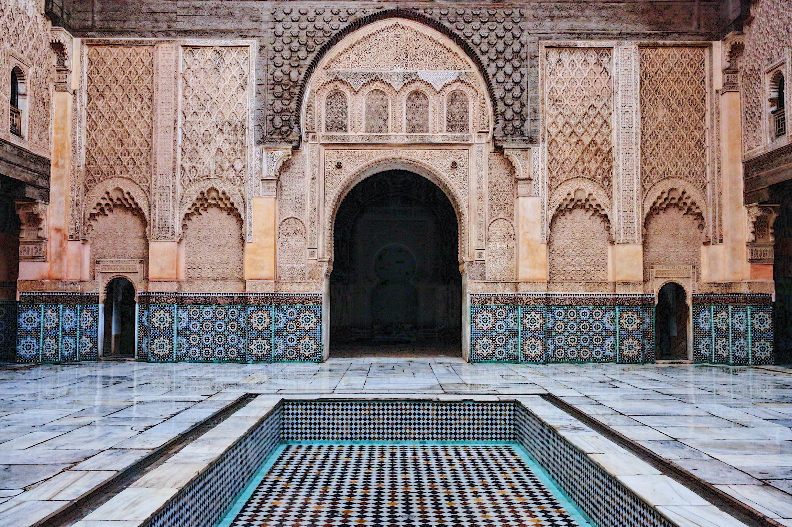
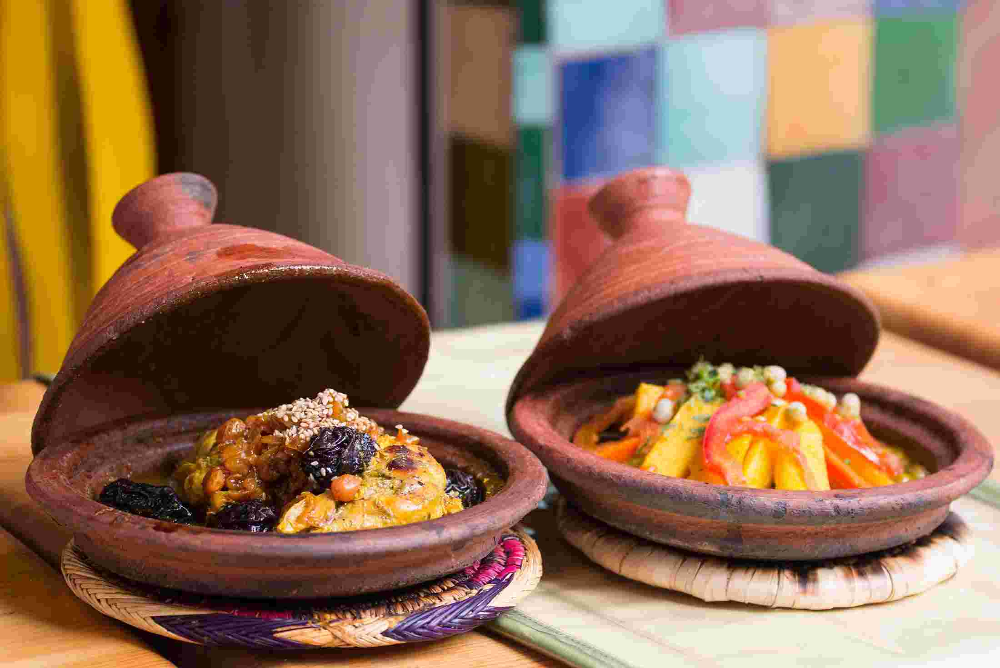
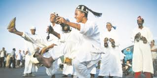

Taking a trip to Morocco is an opportunity to soak up the art of living and the sweetness of a multimillennial country. This country at the forefront of evolution does not want to undo its history. This is, among other things, its advantage. Its traditions are very much alive.
The country is distinguished by its nomadic, Arab and European influences. Live privileged moments as close as possible to the locals while strolling through the narrow alleys of towns and villages. Travel the country to exchange with its people. Moroccans have a great sense of hospitality and will surely invite you to drink tea with them.
Moroccan life: combining tradition and modernity
Moroccans generally earn their living in agriculture and animal husbandry. They are honest with each other and have a sacred, fraternal relationship. They are fine workers from generation to generation and are very good at negotiating. Hospitality is a duty among them, because it is in their tradition. However, they can be demanding when it comes to their wealth or their solidarity. Morocco has always taken advantage of its external relations to look to its future without breaking its millennial traditions. The evolution of the modern world propels Moroccans towards new perspectives where they could combine Moroccan tradition and modernity.
Moroccan architecture: strong asset of the tourism sector

The first characteristic of Morocco is its architectural art. Refined and ornamental, Moroccan architecture reflects a history full of twists and turns of the imperial cities. You will have the opportunity to contemplate the fortifications of Taroudant, Marrakech, Fez and Meknes during your stay. Moroccan architecture was built after successive conflicts and generational rivalries.
Moroccan architectural art has managed to retain its traditional profile, as artisans are forced to revive traditions dating back to the country's Berber era. For the tourism sector, it is a real asset to have such a heritage since tourists generally seek this historic side beyond the beach and the summer sun.
Culinary art: essential characteristic

Moroccan culinary art is an integral part of Moroccan culture. The country is internationally recognized for its typically Western dishes. It is a cuisine that reflects a historical past and a whole way of life for entertaining guests.
Morocco shows, through its recipes, a great diversity of taste in its dishes constituting a pleasant whole. This thousand-year-old country has forged a unique identity through its typical products: couscous, dishes drizzled with honey and melted butter, sweet tea with kaleb or cone sugar, shortbread called ghoriba, dates, pastilla, milk, gazelle horns, flaky pancakes or m'semmen, etc.
Le plat qui rend le Maroc spécial est le tajine, car il n’a jamais le même goût à chaque fois. C’est un ragoût à base de viande de poulet ou d’agneau. À cela, vont s’ajouter les légumes, le citron confit à l’aubergine et l’amande de pruneau. Si vous aimez les épices, c’est un plat que vous devriez goûter, car il en est savamment dosé.
Les Marocains peuvent aussi vous faire goûter un plat qu’ils apprécient particulièrement : la harita, une soupe de pois chiches à base de légumes secs. Ils considèrent cette soupe comme étant un repas complet, car elle est composée de viande, des condiments et d’épices. Ils aiment tout autant manger de la bissara ou soupe de haricots. Si vous aimez les légumes, vous en serez servis ! La soupe se fait avec des betteraves, des carottes, des tomates, des poivrons et même des concombres.
Les pâtisseries sont un petit bonus si vous en avez encore de la place. Elles sont généralement à base d’amande et sont sucrées au miel, non au sucre. Le miel est mieux pour la santé et a des vertus antiseptiques.
Music and dance: essential traditions

Dance and song hold an important place in Moroccan culture. The masters or Chiouks, curators of the Moroccan tradition, animate the ceremonies. The latter are generally baptisms, marriages or others. The masters sing religious texts, ancestral poems or songs based on everyday life in the company of a musical instrument, the bendir.
When it comes to traditional music, you will hear Andaloussi, Chaâbi and Rif. However, music from elsewhere such as Jazz, Blues, Soul and Rock’n’Roll is also heard by everyone.
The instruments used are very diverse such as the Qraqeb or Crotales, the El oud or the plucked musical instrument, the Rbab generally a simple stick, the Gmbri with the electric guitar, etc. Many instruments are made from carapaces, skins, or specific wood. This is just a taste of Moroccan culture and nothing beats discovering this fabulous heritage treasure live!